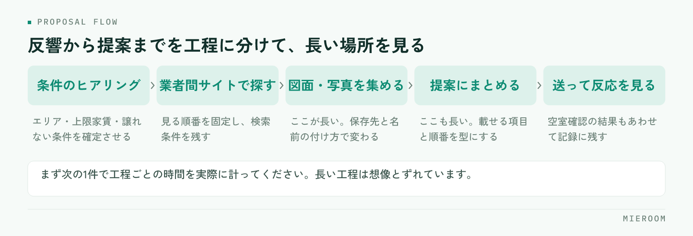

反響が来てから提案を送るまでに時間がかかる。その原因を「探すのが遅いから」と考えているお店は多いのですが、実際に計ってみると、時間が消えているのは探す工程そのものより、その前後です。この記事では、業者間サイトを横断して探すときの手順と、提案までを短くする型を整理します。
この記事の結論
物件検索を速くする方法は、サイトを速く操作することではありません。探す前に条件を3つに絞り、集めた図面の置き場所と提案の型を先に決めておくことで、1件あたりの時間は縮みます。
物件検索が遅いのは、探し方が毎回違うから
同じお店の中でも、スタッフによって物件の探し方が違うことがよくあります。ある人は業者間サイトを1つずつ開き、ある人は付き合いのある管理会社から当たり、ある人は自社の在庫から見る。どれも間違いではないのですが、順番が決まっていないと、探すたびに考える時間が発生します。
もう一つ起きているのが、同じ物件を何度も探し直しているという状態です。先週別のお客様のために調べた物件を、今週また一から探す。図面を保存した場所が人によって違えば、社内に情報があっても再利用できません。
探す速さは、操作の速さではなく、探し方が決まっているかどうかで決まります。まずは自店の手順が言葉になっているかを確認してください。
時間が消えているのは「探す工程」だけではない
反響が来てから提案を送るまでを工程に分けると、どこが長いかが見えてきます。

感覚で議論すると「探すのが遅い」で終わってしまいます。次の1件で、工程ごとに何分かかったかを実際に書き留めてください。長い工程は、たいてい想像とずれています。
多くの場合、長いのは「図面・写真を集める」と「提案にまとめる」の2つです。物件を見つけること自体は数分でも、図面をダウンロードし、ファイル名を直し、必要な情報を書き写し、体裁を整える作業で時間が積み上がります。ここに手を入れないまま検索だけを速くしても、提案が届くまでの時間はほとんど変わりません。
探す前に条件を3つに絞る
検索が長引くいちばんの原因は、条件が多すぎることです。お客様から聞いた希望をすべて条件に入れると、該当が出ず、条件を緩めては検索し直すという往復が始まります。
先に絞るべき条件は次の3つです。
- エリア：沿線・駅ではなく、通勤先や学校からの実際の移動時間で決めます
- 上限の家賃：管理費・共益費を含めた総額で確認します。ここがずれると後で全部やり直しになります
- 絶対に譲れない条件を1つだけ：ペット可、駐車場、1階不可など。2つ以上あるときは、どちらが優先かを先に聞きます
この3つ以外は「あれば嬉しい条件」として脇に置きます。絞る条件と、比較材料にする条件を分けるのがコツです。ヒアリングの段階でここまで決まっていれば、検索は一度で済みます。
「とりあえず何件か送ります」で始めると、送った後に条件が変わり、探し直しになります。急ぐべきは初回返信であって、物件の提案ではありません。まず返信し、条件を確定してから探すほうが、結果的に速く決まります。
業者間サイトを横断して探す手順
業者間サイトは複数を使い分けているお店がほとんどです。横断して探すときは、順番と記録の型を決めておきます。
- 見る順番を固定する：自社在庫 → よく決まる管理会社 → 業者間サイトの順など。毎回同じ順で見ます
- 1回の検索条件を残す：どの条件で探したかをメモしておくと、条件を緩めるときに何を変えたかが分かります
- 候補は一度に絞りきらない：先に広めに拾ってから、比較材料の条件で落としていきます
- 他店が動いている物件を意識する：業者間サイトに出ている物件は他店も見ています。確認の電話は早いほうが有利です
- 空室確認の結果を残す：満室だった、条件が変わっていた、という情報も次に活きます
属人的な探し方と、型が決まっている探し方の違いを整理すると、次のようになります。
| 探し方が人によって違う店 | 手順が決まっている店 | |
|---|---|---|
| 探し始めるまで | 毎回どこから見るか考える | 見る順番が決まっている |
| 検索条件 | 記憶に残るだけ | 条件を残すので緩め方が分かる |
| 図面の置き場所 | 個人のPCやメール内 | 共通の場所に案件ごとで残る |
| 空振りの記録 | 残らず、次も同じ物件を当たる | 満室・条件変更が残り、再確認が減る |
| 引き継ぎ | 担当者が休むと止まる | 途中からでも引き継げる |
図面と写真の扱いで差がつく
集めた図面をどう扱うかで、2件目以降の速さが変わります。ダウンロードしたPDFを個人のパソコンに置いたままにすると、次に必要になったとき誰も見つけられません。
決めておくのは3つだけです。どこに置くか、どういう名前を付けるか、どの案件に紐づけるか。物件名と日付が入った名前で、案件ごとに紐づく場所に置く。これだけで、同じ物件を探し直す作業がなくなります。
間取り図の作り直しにも時間がかかります。もらった図面がそのまま提案に使えないとき、手描きで作り直しているなら、そこは仕組みで短くできる工程です。業務全体の見直し方は賃貸仲介の業務改善ツールで扱っています。
提案の型を先に決めておく
提案の速さは、書式が決まっているかどうかでほぼ決まります。毎回ゼロから体裁を整えていると、物件が見つかってからさらに時間がかかります。
型として決めておくのは、載せる項目と順番です。物件名、家賃と総額、間取りと面積、駅からの距離、譲れない条件を満たしているかどうか、そしておすすめの理由を1行。この並びを固定しておけば、埋めるだけになります。
送る本数も先に決めます。多く送れば選んでもらえるわけではなく、比較しきれずに返信が止まることがあります。3件前後に絞り、それぞれ違う軸のものを入れるほうが、返信は返ってきやすくなります。反響のやりとりを記録として残す方法は反響管理のやり方にまとめています。
よくある質問
業者間サイトは何社に登録しておくべきですか？
探すのが速いスタッフのやり方を、どう共有すればいいですか？
物件情報を自社のシステムに取り込む必要はありますか？
まとめ：探す前と、探した後を短くする
物件検索・提案を速くする方法は、検索画面の操作を速くすることではありません。探す前に条件を3つに絞り、見る順番を固定し、集めた図面と提案の型を決めておく。この3つで、1件あたりの時間は確実に縮みます。
今日から着手できるのは、次の1件で工程ごとの時間を計ることと、図面の置き場所と名前の付け方を決めることです。どちらも費用はかかりません。
ミエルームは、業者間サイトとの連携や物件コンバータで物件情報の取り込みに対応し、間取り作成も行えます。反響から接客・申込までを案件ごとに1か所で記録できるので、集めた図面や空室確認の結果が担当者の手元で止まりません。デモアカウントの発行と、最短即日でのスタートが可能です。既存のExcelデータのインポートと初期設定の代行にも対応していますので、まずはご相談ください。